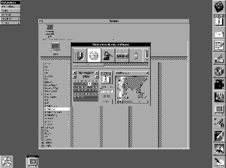
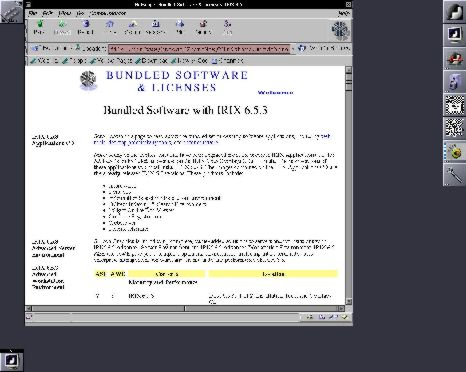
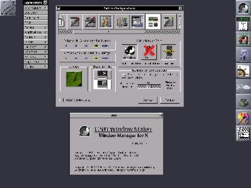
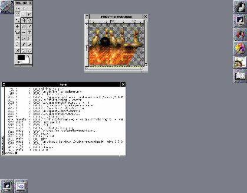
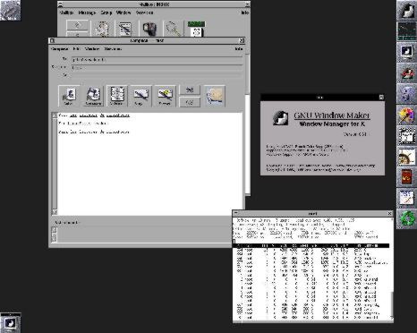

![[Photo of the Author]](../../common/images/Georges-Tarbouriech.jpg)
por Georges Tarbouriech Sobre el Author: Georges es un usuario viejo de Unix (comercial o libre). Trabaja en medio de una pequeña decena de SO entre los cuales se encarga de administración de redes, desarrollos, sistemas... Para variar los placeres, su tiempo libre está dedicado a sus dos viejos ordenadores (Amiga y NeXT) y a proyectos que se refieren al software libre. Contenidos: |
Resumen:
WindowMaker 0.61.1 es la última versión de un gestor de ventanas con el aspecto de NeXT.
Unos van a decir "otro gestor de ventanas más". Verdad, pero éste sale de lo corriente. Si están cansados de los sucedáneos de Windows, WindowMaker está hecho para vosotros.
En el mundo de Linux, existe un fenómeno sorprendiente: la inspiración "Windows", lo que no deja de ser una contradicci'on. Los gestores de ventanas básicos, fvwm y sus derivados son un ejemplo típico. Para los entornos (desktops), casi es peor: KDE es un amalgama de Windows y de CDE. Este último merece un paréntesis, pues probablemente se lleva la palma del software con m'as errores en el mundo del Unix comercial. (Particularmente bajo Solaris 2.6, en el cual han olvidado de codificar unos menús, entre otras curiosidades).
GNOME, aunque más original que KDE, sigue el mismo camino. Indudablemente, esta particularidad ha contribuido probablemente a que Linux sea atractivo para muchos usuarios de Windows. Aún así, no tengo nada contra éstos desktops. A menudo disponen de herramientas muy interesantes.
WindowMaker es un desarrollo de Alfredo Kojima ayudado por Dan Pascu y Matt Hawkins. Muchas otras personas han participado al proyecto y no se puede enumerar a todas. La principal característica de WM es su aspecto. Los afortunados conocedores de NeXTStep encontrarán más que similitudes. WM es una copia exacta del interfaz de NeXT.

¡NeXT, el verdadero!
Su filosofía también es particular y necesita una cierta curiosidad y una aptitud para olvidar las viejas costumbres. Volveremos a este punto después.
Encontrarán WM en http://www.windowmaker.org, así como la librería necesaria para su funcionamiento, libPropList. Tienen que bajarla y compilarla antes de WM. ¡Aunque tengan una versión anterior de ésta librería, hay que rehacerla! Pueden bajar WindowMaker-extra-0.*.* si quieren más iconos o temas.
Necesitarán también las correspondientes librerías para ser capaces de compilar con los soportes jpeg, tiff... LEAN los ficheros README e INSTALL antes de compilar, evitarán así varios contratiempos.
| LEAN los ficheros README e INSTALL antes de compilar |
Esta lectura les informará en particular de los productos necesarios y sus versiones. Por ejemplo, no podrán instalar WM sin yacc y lex (o bison y flex en vez de los dos precedentes). Pueden también considerar la instalación de xgettext si no formaba parte de su distribución de Linux (u otro SO).
Los usuarios de RedHat que deseen instalar una nueva versión de WM tendrán que olvidar el RPM incluído en la distribuci'on. EL mismo castigo para los usuarios de SuSE. WM puede instalarse en cualquier máquina Unix (y Linux es Unix, nunca se dirá bastante) pero a veces con unas particularidades.

WindowMaker bajo Irix 6.5.3 (O2)
Las opciones de "configure" pueden revelarse primordiales. También est'a incluída una FAQ en la distribución. Y una documentación bastante completa está disponible en varies formatos. Terminada la lectura pueden entrar (¡sí, sí!) en el meollo del asunto:
./configure make make installSi quieren utilizar WM con GNOME o KDE, bastará con:
./configure --enable-gnome ou --enable-kde
Si usan Linux, tienen que ejecutar ldconfig después de la instalación,
suponiendo que el camino de las librerías se encuentra en el fichero
ld.so.conf.
Por defecto, todo se instala en /usr/local, que tendrá que figurar en el PATH.
Con unos SO, también puede ser necesario añadir /usr/local/bin en la primera
posición del path. Y lo mismo con las librerías: /usr/local/lib tendrá que
encontrarse en cabeza del camino con SO tal como Solaris.
Si no tienen privilegios de "root", el método a seguir está indicado en los
ficheros mencionados más arriba.
Lo mejor para teminar: si compilar no es lo que m'as les gusta, WM existe en paquetes RPM, debian, ...
Configuración
Después de compilar e instalar, hay que lanzar el programa wmaker.inst. Sirve para crear todos los directorios y subdirectorios necesarios, como un fichero para arrancar WM del tipo .xinitrc o .xsession, en el directorio del usuario. Si han seguido las instrucciones, tras siguiente arranque de startx, encontrarán WM. Si utilizan xdm o similar para arrancar la sesión X, será un poquito más complicado. Ahora se puede empezar con la personalización del interfaz.
- Preferencias
El programa WPrefs permite administrar automáticamente las Preferencias.
El paralelo con NeXT toma aquí su sabor. ¡Es todo igual!

Preferencias de WindowMaker en modo de 24 bits (1024x768)
El funcionamiento, no sólo es user-friendly sino también evidente. Globos de ayuda sirven como guía si son necesarias. A ustedes les toca descubrir los detalles de esta herramienta.
- Dock
La particularidad de WM heredada del NeXT, es el dock.
El dock es la columna de iconos alineados a la derecha de la pantalla.
Cada icono sirve para arrancar la aplicación correspondientes
con un doble-pinchado.
¿Cómo "dockar" una aplicación? A ustedes les dejo el placer de descubrirlo.
¿Prefieren los menús? Son totalmente configurables, de varias maneras más o
menos sofisticadas. Más para descubrir.
Todo eso puede ser presentado el idioma elegido.
- Clip
La última caracteristica y no la menos importante, el "clip".
Es el icono arriba y a la izquierda de la pantalla. Este objete posee numerosas funcionalidades.
Entre otros, puede sustituirse al "pager".
Visualización
Teniendo en cuenta el número de configuraciones posibles, la visualización es un problema bien conocido bajo Linux.
¿Qué resolución, qué profundidad?
Evidentemente depende de la capacidad de la tarjeta gráfica. Si la tarjeta aguanta el modo 24 bits, éste parágrafo no tiene interés. Pero si sólo aguanta el modo 8 bits, es otra cosa.
Habrá que llegar a un compromiso entre la resolución y el número de colores dedicado a WM. En WPrefs, los valores por defecto para el modo de 8 bits están bien definidos. Lo mejor es dejarlos así pero nada impide que jueguen con ellos. Sin embargo, cuanto mayor sea la resolución, mejor. Pueden juzgar por las imágenes mostradas abajo (Solaris visualiza en 1152x900 y Amiga en 1280x1024). Para ahorrar los recursos, hay que evitar los fondos de pantalla complejos, eligiendo fondos de un solo color.
Prueben varias soluciones, pero recuerden: siempre será un compromiso.
|  |  |
| WM bajo Solaris 2.6 | WM bajo RedHat 5.1 Amiga |
Todas las aplicaciones disponibles bajo Linux u otro Unix libre funcionan con WM, claro. No obstante, se encuentran aplicaciones específicas. Sean pequeñas utilidades "dockables", sean aplicaciones más importantes con el aspecto apariencia de NeXT.
Las primeras se encuentran en http://www.BenSinclair.com y las otras pueden ser bajadas desde http://www.linuxapps.com o http://www.freshmeat.net
Podemos mencionar el programa de correo postilion, exacta imagen del de NeXT o FSViewer que es un gestor de ficheros muy semejante al modelo. Hay muchos más, por lo que no se pueden enumerar todos.
WindowMaker forma parte del proyecto GNUStep. Este proyecto es un intento
de portar OpenStep al máximo número de plataformas. OpenStep es el
entorno de referencia en el desarollo de objetos, y está basado en Objective C.
Desgraciadamente, OpenStep también es el principio del fin para NeXT.
Se trataba del injerto de NeXTStep sobre otros SO (Solaris, No Terminado...)
haciendo énfasis en el desarrollo. No olvidemos que
Paradójicamente, ésta máquina y éste SO tan revolucionarios no pudieron
conquistar al mercado. Y este último intento de NeXT fue un fracaso
comercial, como todo lo que precedió. Errores de marketing,
producto mal definido asimilado
a ordenadores personales en vez de estaciones de trabajo, entonces demasiado
caro... NeXT ha cerrado sus puertas para ser comprado por Apple. ¿Un chiste?
¡El creador de la sociedad NeXT era el co-fundador de Apple, Steve Jobs!
¿Por qué éste recuerdo "histórico"? Porque unos diez años más tarde, NeXT
vuelve en diferente formas. Una grán parte del mundo del software libre
arranca proyectos fundados en el aspecto de NeXT. GNUStep es el ejemplo más
notable. Pueden visitar
http://www.gnustep.org.
Por fin Apple lanza un SO multitarea, MAC OS X, que no es otra cosa que
NeXTStep en la forma de la casa. Después de ser rechazado, plagiado (tengo
apellidos, pero basta con mirar las fotos para darse cuenta), mucha gente
se da cuenta de que NeXT no se ha anticuado.¡Imaginen el adelanto que
tenía cuando apareció en 1987! Este sistema se fundaba en un kernel Mach
muy compacto y se trataba de un Unix BSD 4.2 a principios y 4.3 después.
Gusta o no, pero no deja indiferente.
Por consiguiente, si tienen afinidades con éste magnífico producto, WindowMaker
podrá ser un primer paso en la cofradía. Luego, nada impide que participen
a los diferentes proyectos.
WM está en la versión 0.61.1. Es muy estable, pide bastantes pocos recursos y evoluciona muy rápidamente. Su orientación podría variar un poco en la medida en que se est'a considerando que pudiera formar parte del proyecto GNOME. Entonces, tendríamos dos productos distintos: el de ahora y uno integrado en GNOME. ¡Ya veremos!
Para terminar, si tienen ganas de usar un interfaz con nada que ver con los productos del megalómano de Redmond, prueben WindowMaker.
¡Y Disfruten!
|
Contactar con el equipo de LinuFocus
© Georges Tarbouriech LinuxFocus 1999 |
Translation information:
|
1999-11-04, generated by lfparser version 0.6
{kind=link}
{kind=link}
{kind=link}
{kind=link}
{kind=link}